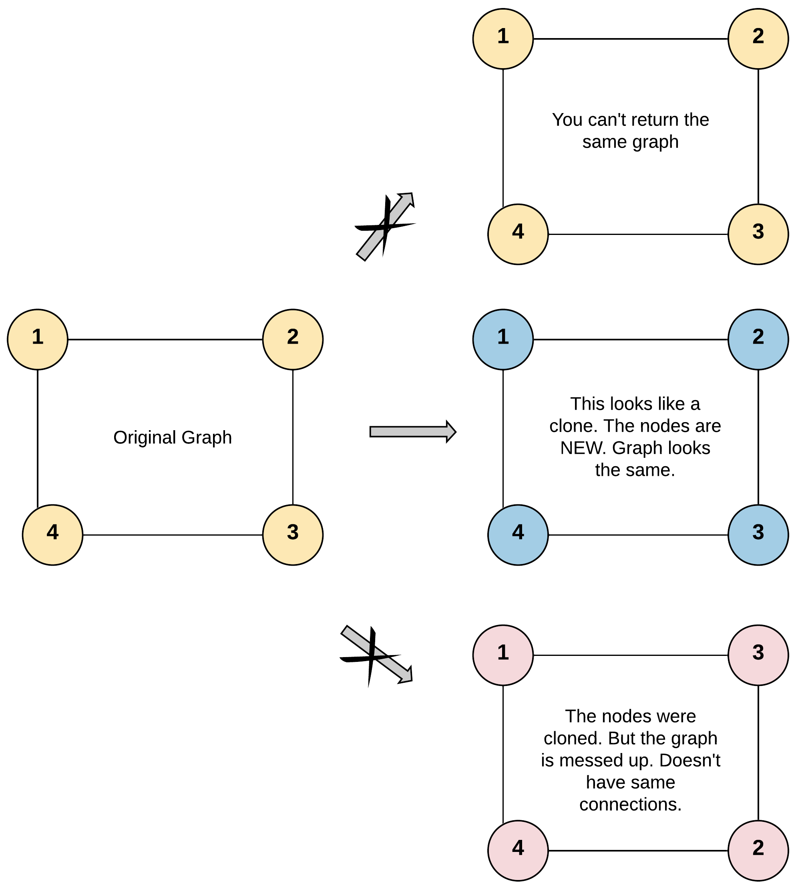
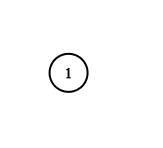

| Category | Difficulty | Likes | Dislikes |
|---|---|---|---|
| Algorithms | Medium | 10436 | 4151 |
hash-table | depth-first-search | breadth-first-search | graph
facebook | amazon | google | microsoft | ebay | oracle | nvidia | bloomberg | apple | docusign | tiktok | grammarly | pocket-gems | uber | wix
Given a reference of a node in a connected undirected graph.
Return a deep copy (clone) of the graph.
Each node in the graph contains a value (int) and a list (List[Node]) of its neighbors.
class Node {
public int val;
public List<Node> neighbors;
}
Test case format:
For simplicity, each node's value is the same as the node's index (1-indexed). For example, the first node with val == 1, the second node with val == 2, and so on. The graph is represented in the test case using an adjacency list.
An adjacency list is a collection of unordered lists used to represent a finite graph. Each list describes the set of neighbors of a node in the graph.
The given node will always be the first node with val = 1. You must return the copy of the given node as a reference to the cloned graph.
Example 1:

Input: adjList = [[2,4],[1,3],[2,4],[1,3]]
Output: [[2,4],[1,3],[2,4],[1,3]]
Explanation: There are 4 nodes in the graph.
1st node (val = 1)'s neighbors are 2nd node (val = 2) and 4th node (val = 4).
2nd node (val = 2)'s neighbors are 1st node (val = 1) and 3rd node (val = 3).
3rd node (val = 3)'s neighbors are 2nd node (val = 2) and 4th node (val = 4).
4th node (val = 4)'s neighbors are 1st node (val = 1) and 3rd node (val = 3).Example 2:

Input: adjList = [[]]
Output: [[]]
Explanation: Note that the input contains one empty list. The graph consists of only one node with val = 1 and it does not have any neighbors.Example 3:
Input: adjList = []
Output: []
Explanation: This an empty graph, it does not have any nodes.
Constraints:
[0, 100].1 <= Node.val <= 100Node.val is unique for each node.